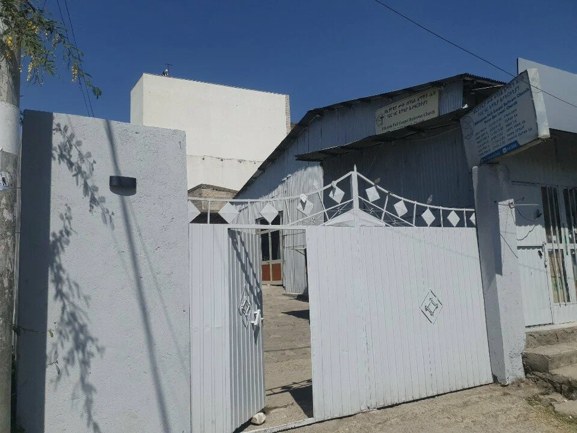
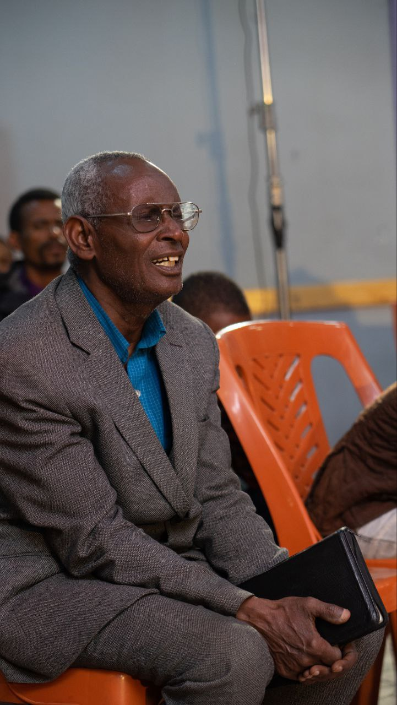
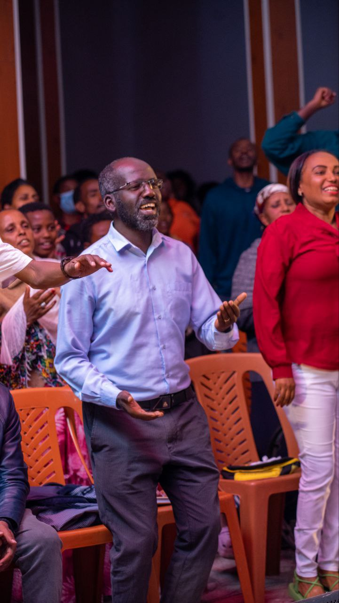
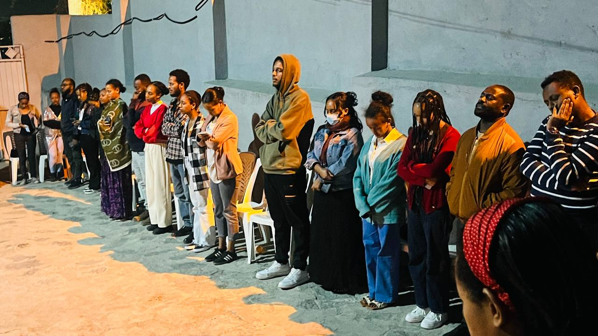
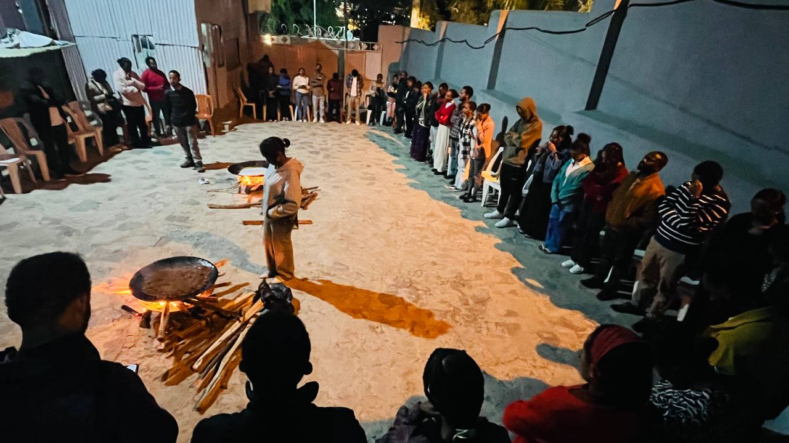

"እግዚአብሔር መንፈስ ነው፥ የሚሰግዱለትም በመንፈስና በእውነት ሊሰግዱለት ያስፈልጋቸዋል።" — ዮሐንስ 4:24


Join us in person at our Yerer campus or stream from anywhere across the globe.
Our primary weekly celebration featuring vibrant Amharic worship, testimonies, and foundational biblical preaching.
Deep-dive exposition into the Scriptures. Currently journeying through the Book of Acts and apostolic power.
An evening dedicated to intense intercessory prayer, divine healing, prophetic ministry, and breakthrough.
We are more than a weekend congregation; we are a vibrant kingdom community.




The unchanging biblical pillars that anchor our faith and ministry in Addis Ababa.
We believe redemption is received solely through repentance and faith in the finished cross of Jesus Christ.
We emphasize the empowering immersion of the Holy Spirit, accompanied by spiritual gifts for victorious living.
We proclaim that Christ’s atonement provides holistic healing—spirit, mind, and physical body—for believers today.
We live with eager expectation for the imminent, physical Return of our Lord and King, Jesus Christ.
Recorded Live · Friday Worship Night
Immerse yourself in prophetic spontaneous worship led by the El-Roi Worship Choir. Experience the atmosphere of freedom and divine encounter wherever you are.
Meditate on God's promises. Click "Amen" to join hundreds of believers standing in agreement.
"ለእናንተ ያለኝን አሳብ እኔ አውቃለሁ፤ ፍጻሜና ተስፋ እሰጣችሁ ዘንድ የሰላም አሳብ ነው እንጂ የክፉ ነገር አይደለም።"
— ትንቢተ ኤርምያስ 29:11"እግዚአብሔርን የሚጠባበቁ ግን ኃይላቸውን ያድሳሉ፤ እንደ ንስር በክንፍ ይወጣሉ፤ ይሮጣሉ፥ አይታክቱም፤ ይሄዳሉ፥ አይደክሙም።"
— ትንቢተ ኢሳይያስ 40:31"ኃይልን በሚሰጠኝ በክርስቶስ ሁሉን እችላለሁ። አምላኬም እንደ ባለ ጠግነቱ መጠን በክብር በክርስቶስ ኢየሱስ የሚያስፈልጋችሁን ሁሉ ይሞላባችኋል።"
— ወደ ፊልጵስዩስ ሰዎች 4:13